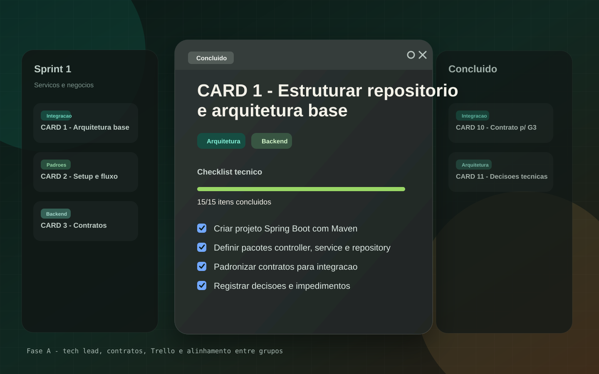
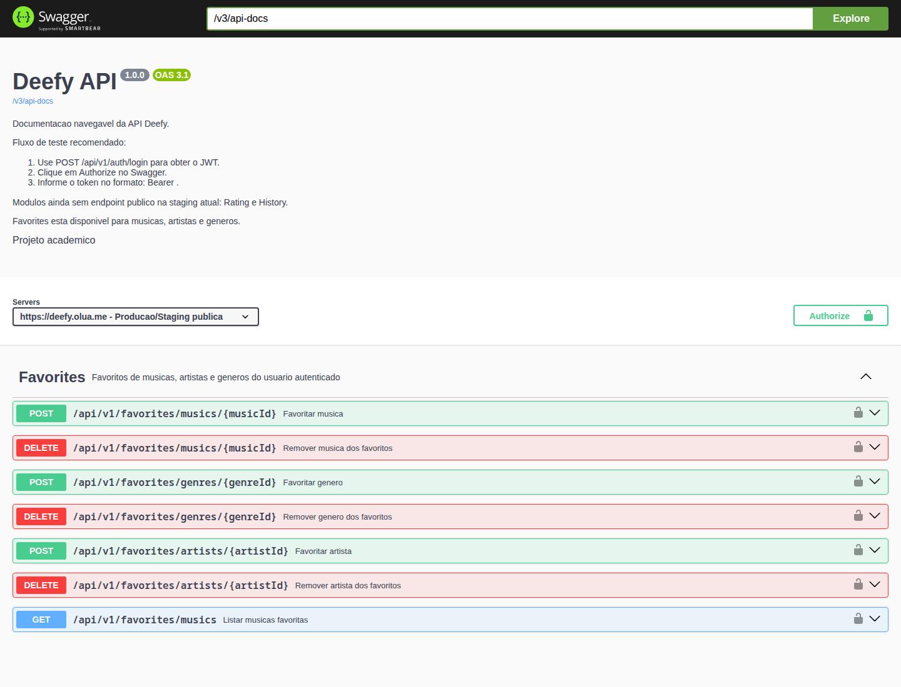
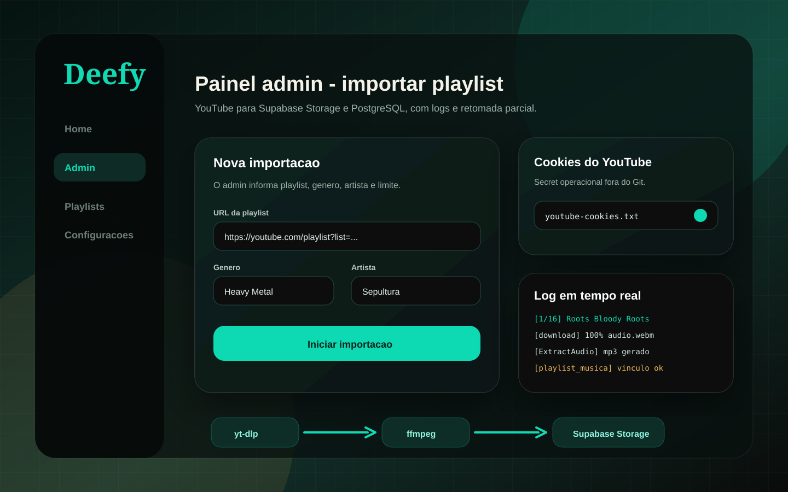
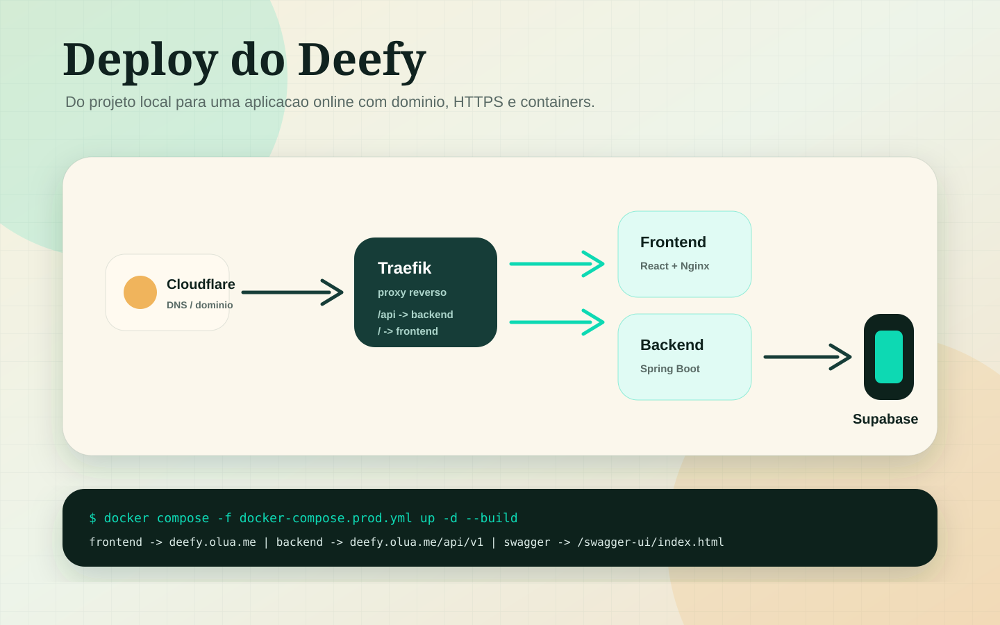
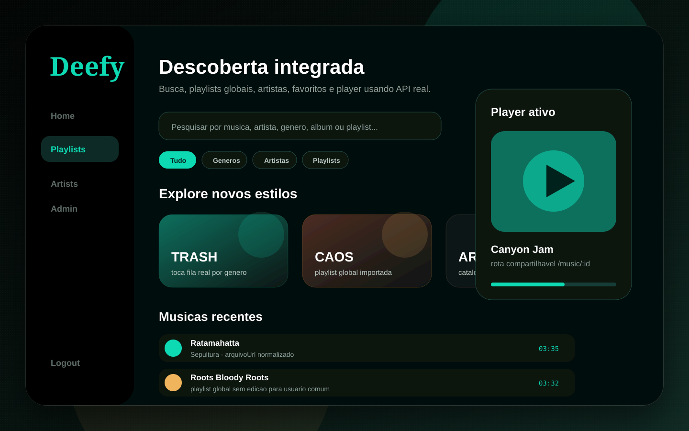
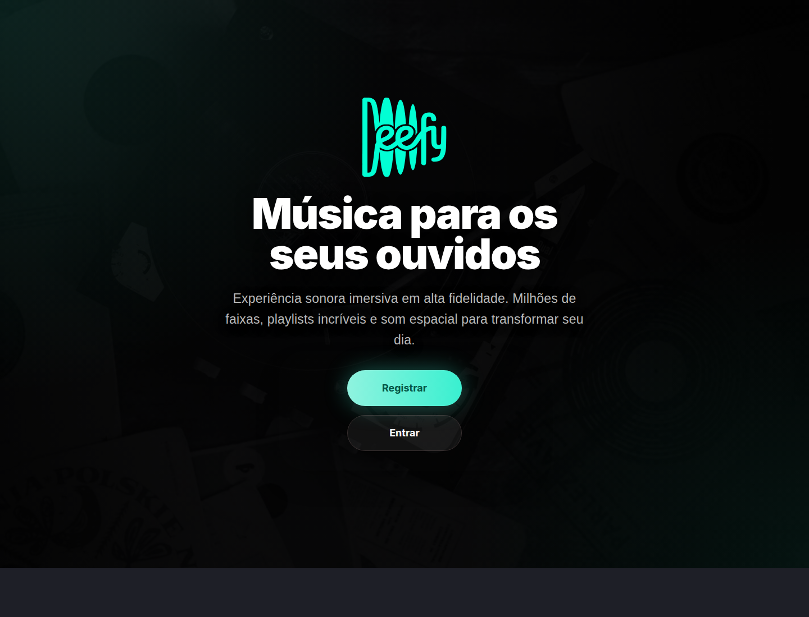

Organizacao e contratos
Criei e mantive fluxos no Trello, defini arquitetura inicial, contratos de servico, padroes de entrega e pontos de integracao entre grupos.
Projeto academico real publicado na web
Um resumo apresentavel da trajetoria tecnica do projeto: organizacao do grupo, integracao entre equipes, backend unificado, Supabase, Docker, VPS, painel admin e importacao de musicas para popular o catalogo.
O que importa na apresentacao
A contribuicao principal foi transformar partes separadas em um sistema funcionando: orientar o grupo, remover mocks, integrar API, publicar a aplicacao e criar ferramentas para administrar o catalogo.
Criei e mantive fluxos no Trello, defini arquitetura inicial, contratos de servico, padroes de entrega e pontos de integracao entre grupos.
Em varias telas, substitui dados falsos por chamadas reais, tratei JWT, normalizei respostas do backend e alinhei nomes de campos usados pelo frontend.
Containerizei frontend e backend, subi em VPS, configurei Traefik, dominio, variaveis de ambiente e cache correto para deploy seguro.
Com apoio do Ikki na construcao do painel, desenhei a logica de importacao: o admin envia uma playlist do YouTube, o backend processa em background, baixa audio com yt-dlp, envia arquivos para o Supabase Storage e registra artista, musica e playlist no banco.
Parte do trabalho foi explicar como frontend conversa com backend, como JWT protege rotas, por que o banco nao deve ser acessado direto pelo React e como testar um fluxo completo sem depender de dados mockados.
Aprendizado de organizacao
No inicio, dividir responsabilidades parecia a forma certa de ganhar foco. O problema e que a separacao ficou forte o bastante para tambem separar a comunicacao.
A principio, separar grupos foi eficaz para organizar tarefas. Mas foi tao eficaz que separou demais a comunicacao, inclusive dentro das proprias areas. Isso quebrou a dinamica da Fase A e quase levou a integracao para uma ruina: cada parte evoluia, mas nem sempre com os mesmos contratos, prioridades e entendimento do produto.
Quando pelo menos o grupo de Servicos e Negocios foi unido ao grupo de API, a dinamica melhorou. A comunicacao ficou mais direta, as decisoes ficaram menos espalhadas e a arquitetura em codigo passou a fazer mais sentido como um backend unico.
Com um backend mais unificado, ficou mais facil conversar com Banco de Dados & Persistencia sobre tabelas, campos e constraints, e tambem ficou mais claro pedir telas e ajustes para o grupo de Frontend.
Processo de construcao
A historia do projeto nao foi linear. Primeiro havia grupos separados; depois o backend foi unificado e as prioridades ficaram mais claras.
Organizacao de pacotes, camadas, padrao de repository/service/controller e setup inicial.
Interfaces, regras esperadas, documentacao e alinhamento com o grupo responsavel pela API.
Cards de arquitetura, setup, contratos, impedimentos e documentacao para reduzir desalinhamento.
Registro, login JWT, perfil, catalogo, busca, detalhes, favoritos, avaliacoes e playlists.
Home, playlists, admin, busca, player e detalhes passaram a consumir endpoints reais.
Deploy em main, staging preservada, ambiente online e demonstravel para a apresentacao.
Como a integracao funciona
Essa foi uma das principais viradas do projeto: parar de tratar telas como prototipos isolados e conectar tudo a um backend que valida regras, autentica usuarios e persiste dados.
Login gera JWT. O frontend guarda e envia o token nas requisicoes protegidas. Isso permitiu diferenciar usuario comum de admin.
Alguns campos chegavam como arquivoUrl, enquanto o player esperava outros nomes.
A solucao foi normalizar a resposta sem alterar schema.
A Home sofria com consultas N+1. Ajustei repositories com carregamento mais eficiente de musica, artista e favoritos.
Backend e persistencia
O frontend nunca acessa o banco direto. A comunicacao passa pela API: controller recebe HTTP, service aplica regra de negocio, repository consulta o banco via JPA/Hibernate e o mapper devolve DTOs para o React.
A API nao tem senha do banco fixa no fonte. Em producao, a VPS injeta variaveis de ambiente.
spring.datasource.url=${SPRING_DATASOURCE_URL:...}
spring.datasource.username=${SPRING_DATASOURCE_USERNAME:...}
spring.datasource.password=${SPRING_DATASOURCE_PASSWORD:...}
spring.jpa.hibernate.ddl-auto=noneA entidade informa para o Hibernate qual tabela e quais colunas do banco representam uma musica.
@Entity
@Table(name = "musica")
public class Music {
@Column(name = "titulo")
private String title;
@ManyToOne(fetch = FetchType.LAZY)
@JoinColumn(name = "artista_id")
private Artist artist;
}O Spring Data gera consultas por nome de metodo e tambem permite JPQL quando a busca precisa navegar por relacionamento.
public interface MusicRepository
extends JpaRepository<Music, Long> {
@EntityGraph(attributePaths = "artist")
Page<Music> findByTitleContainingIgnoreCase(
String title, Pageable pageable);
}O service busca entidades relacionadas, valida existencia e so entao salva. A transacao protege a operacao.
@Transactional
public MusicDetailResponseDTO createMusic(MusicRequestDTO request) {
Artist artist = artistRepository.findById(request.artistId())
.orElseThrow(() -> new ArtistNotFoundException(request.artistId()));
Music music = musicMapper.toEntity(request);
music.setArtist(artist);
return musicMapper.toDetailDTO(musicRepository.save(music));
}ddl-auto=noneO Hibernate mapeia as tabelas, mas nao cria, altera ou remove colunas em producao. Isso evita que a aplicacao mude o banco sem o time de Banco de Dados aprovar.
@EntityGraph contra N+1Ao buscar musicas, tambem carregamos o artista quando ele sera usado na resposta. Isso evita uma query extra para cada musica da Home ou dos favoritos.
A API nao devolve a entidade JPA crua. Ela converte para DTOs, deixando o React receber so os campos necessarios, como titulo, artista, capa e arquivo de audio.
Seguranca entre navegador e API
CORS foi um dos pontos importantes da integracao: mesmo com backend online, o navegador so deixa o frontend consumir a API quando a resposta do servidor autoriza aquela origem.
CORS significa Cross-Origin Resource Sharing. Ele existe porque o navegador bloqueia, por padrao, uma pagina tentando acessar dados de outro dominio, protocolo ou porta. A API precisa dizer explicitamente: "essa origem pode falar comigo".
Esse erro aparece quando o backend nao inclui o header permitindo a origem do frontend.
A correcao e configurar CORS no Spring Security/WebMvc para liberar a URL certa, sem usar
* em fluxo autenticado.
Antes de uma requisicao com Authorization ou metodos como PATCH,
o navegador faz uma consulta previa. Se o backend bloquear OPTIONS,
a chamada real nem chega a acontecer.
CORS e uma regra do navegador. Quem protege dados de verdade e autenticacao, autorizacao, JWT, validacao de permissao e regras no backend. Ferramentas como Postman nao dependem de CORS como o browser.
Infraestrutura
O Deefy foi empacotado para producao com containers separados, variaveis de ambiente, proxy reverso e dominio publico.
Admin e catalogo
Para demonstrar um catalogo real, criamos um fluxo administrativo que importa playlists, reaproveita dados existentes e evita duplicidade.
Cookies do YouTube ficam fora do Git, salvos em secrets/,
e podem ser atualizados pelo painel admin sem expor senha.
O script procura artista, musica e playlist por nome normalizado antes de criar registros, reduzindo repeticoes como variacoes de acento e caixa.
As playlists importadas viraram colecoes publicas de descoberta, sem botoes de edicao para usuario comum e com player funcional.
Dificuldades e ajustes
A maior parte do trabalho dificil nao foi criar telas isoladas: foi fazer frontend, backend, banco, storage e infraestrutura concordarem entre si.
Algumas telas pareciam prontas, mas nao consumiam API real. Foi preciso adaptar services, autenticar requests e alinhar DTOs.
O gargalo nao era a VPS; era o backend buscando artistas e favoritos em consultas repetidas. Corrigimos sem mexer no banco.
O importador precisou lidar com HTTP 429, cookies, runtime JavaScript, EJS e logs maiores para diagnosticar falhas.
Adicionamos no-cache no index.html e protegemos playlists globais para usuario comum nao editar o que e publico.
Evidencias visuais
Abaixo estao os prints publicos capturados da producao e evidencias visuais prontas para os fluxos protegidos, sem expor senha, cookies ou dados operacionais.

Cards de estruturacao, documentacao, contratos dos servicos e registro de impedimentos.
evidencia: Trello da Fase A
Documentacao navegavel para testar Auth, User, Music, Playlist, Favorites e History.
print real: producao
Fluxo admin com playlist do YouTube, genero, cookies e log de processamento.
evidencia: fluxo protegido
Containers backend/frontend, dominio Cloudflare e rotas publicas respondendo.
evidencia: arquitetura deploy
Home, playlists globais, player, busca, favoritos, catalogo e rotas compartilhaveis.
evidencia: rotas protegidas
Print publico de `https://deefy.olua.me`, com index sem cache para evitar bundle antigo depois do deploy.
print real: deefy.olua.meRoteiro curto
Este bloco resume a narrativa para apresentar sem se perder em detalhes tecnicos demais.
"A parte mais importante nao foi escrever mais codigo. Foi fazer as partes conversarem."